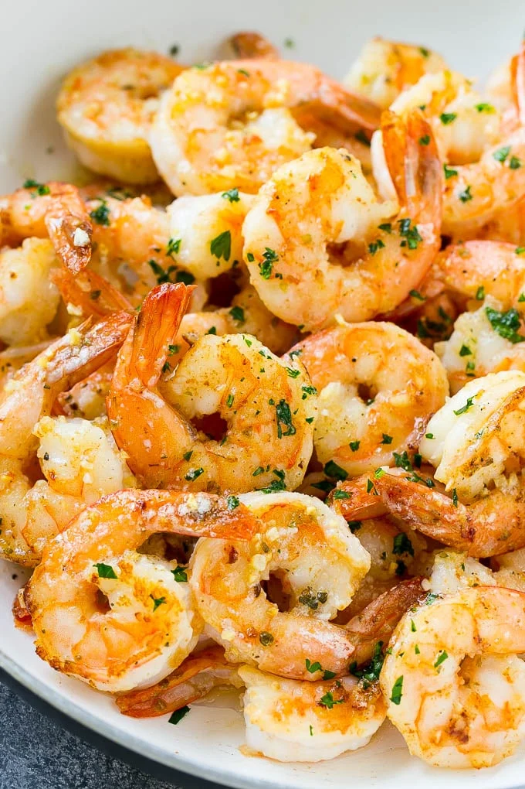
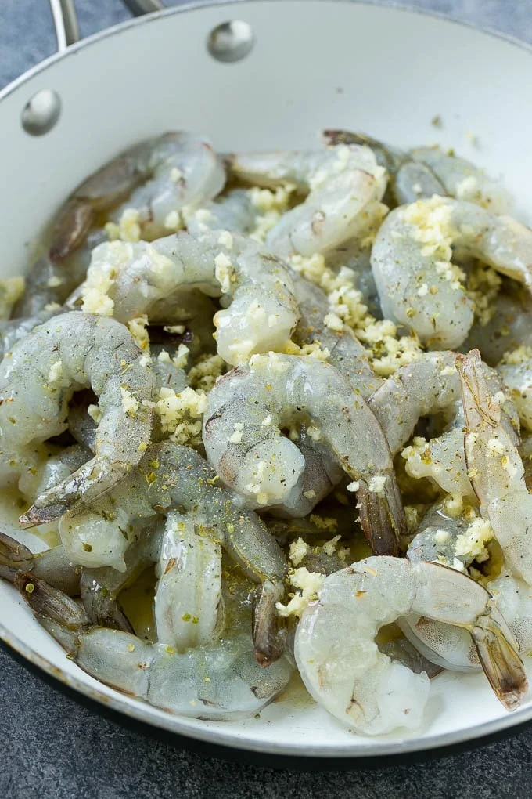

Garlic Butter Shrimp

Description
This is my all time favorite recipe when I want to enjoy shrimp with a glass of wine.
Ingredients
- 4 tablespoons butter
- 1 lb large shrimp
- salt and pepper to taste
- 1 teaspoon Italian seasoning
- 2-3 teaspoons minced garlic use more if you love garlic!
- the juice of one lemon
- 1 tablespoon of chopped parsley
Instructions
- Place the butter in a large pan and melt over medium high heat. Add the shrimp and season with salt, pepper and Italian seasoning.
- Cook for 3-5 minutes, stirring occasionally, until shrimp are pink and opaque.
- Add the garlic and cook for one more minute.
- Stir in the lemon juice and parsley, then serve!
